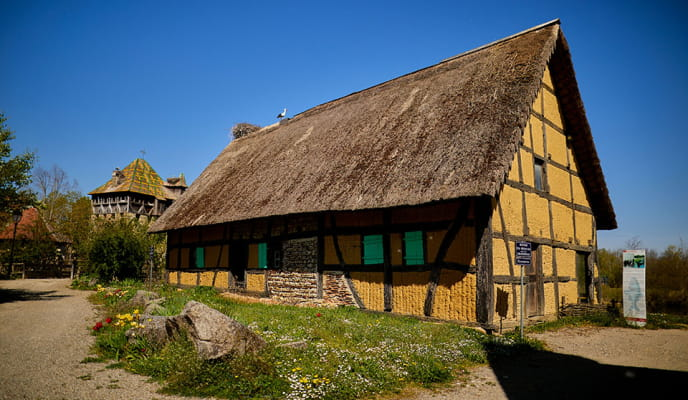
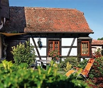
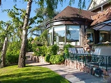
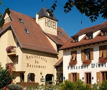

Proposé aux meilleures tables d'Alsace

Les délices de nos rivières
-
Arnaud Fuchs

Restaurant Le Cerf
-
Michel Husser

Restaurant Auberge de l'Ill
-
Marc Haeberlin

Restaurant Le Rosenmer
-
Hubert Maetz

Auberge St Laurent
-
Laurent Arbeit

Restaurant Le R.D.V. des copains
-
Geoffroy Fuchs
# Carnet d'adresse des restaurations #
# Enregistrement des commandes #
# Newsletter de satisfaction #